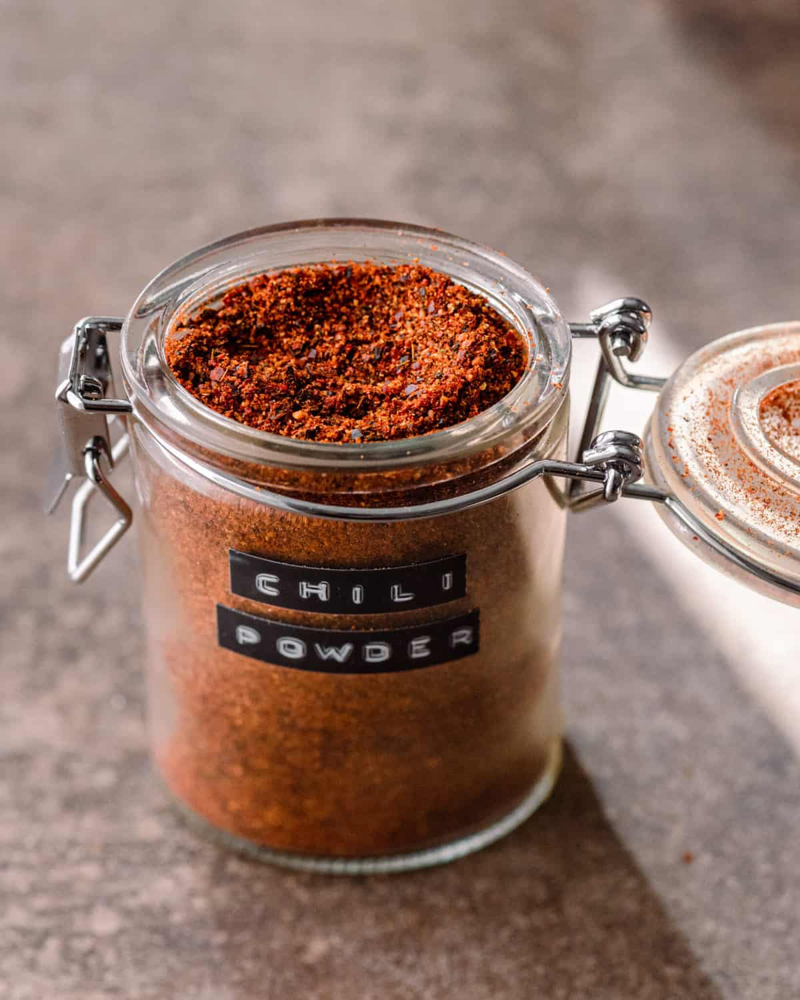

Homemade Chili Powder Recipe

Learn how to make this tasty chili powder (jar not included).
Ingredients
- 4 ancho peppers
- 4 guajillo peppers
- 2 to 5 chiles de arbol
- 2 Tbsp cumin seeds
- 1/2 Tbsp coriander seeds
- 1 Tbsp Mexican oregano
- 2 tsp garlic powder
- 2 tsp onion powder
- 1 tsp smoked paprika
- 1/4 tsp ground cinnamon
Instructions
- Using your fingers, remove the stem from each chili pepper and gently tear the peppers apart. You can use kitchen shears, but using your hands is easier. Be sure to wash your hands after handling the peppers, or wear food safe gloves if your skin is sensitive.
- Once the peppers are open, loosen all of the seeds and any membranes, or scrape them out. This is necessary to minimize bitterness.
- Heat a cast iron skillet or other heavy, dark pan over medium heat, but don't heat for too long. Add the larger chilies (anchos and guajillos) in a single layer without overlap. Toast just until fragrant, about 1 minute, maybe 1 1/2 minutes, then flip and toast for 30-60 seconds. Smaller peppers like chile de arbol need 30 to 45 seconds, so I toast those separately.
Take care not to scorch them or they will taste bitter. Remove and allow to cool completely. Take off the heat and allow to cool.
- Add the cumin and coriander seeds to the hot pan. Toast until very fragrant, about 45 to 60 seconds, shaking the pan or stirring frequently to prevent burning, until toasty and aromatic. Remove and allow to cool.
- Once cool, add the chile peppers and toasted whole spices to a spice grinder or high powered blender. If using a small spice grinder, tear up the chilies with your hands into smaller pieces and do this in two batches. Blend until the peppers and spices are pulverized.
- Add the ground spices (oregano, garlic powder, onion powder, paprika, and cinnamon). Blend until a fine powder has formed. Allow the powder to settle before removing the lid.
- Store in an airtight container in a cool, dry place for up to 6 months. Makes 12 tablespoons, enough for 3 batches of this chili recipe.